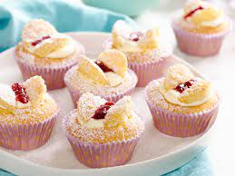
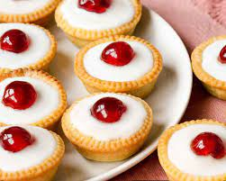
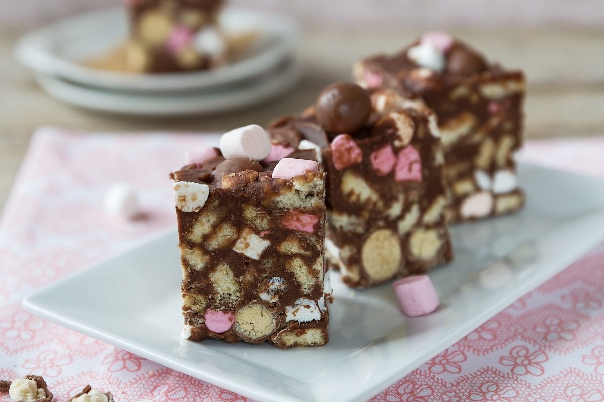
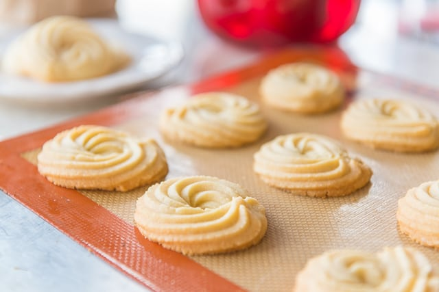
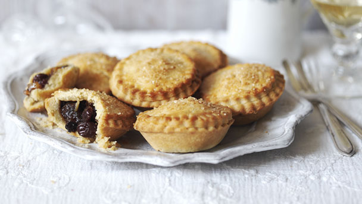

Welcome to Mammy's Secret Recipes
Mammy's Scones

Ingredients
- 500g self-raising flour, plus extra for dusting
- 120g butter, chilled
- 1 tsp baking powder
- 250ml milk, plus extra for brushing
- 1 large free-range egg
- 3 tbsp sugar
Method
- Preheat the oven to 180°C/356°F/Gas Mark 4, line a large baking sheet with parchment paper.
- Combine the flour, 2 tbsp of sugar, baking powder and the butter in a large mixing bowl and using your fingertips, rub in the butter until the mixture resembles rough breadcrumbs.
- Making a well in the mix, add the currants, the milk and the egg.
- In a measuring jug, whisk together the milk and egg until combined. Pour this into the crumb mixture and mix through with a two forks until a rough dough forms.
- Dust a clean work surface with a little flour, turn the dough out of the bowl and press into a round shape. With a rolling pin, roll the dough out to a thickness of about 4cm (1.5"). Using a 7.5cm (3") circular pastry cutter, cut out the scones and place on the baking sheet. Press the trimmings together, roll out and repeat until you have used all the dough. Otherwise just cut into squares. Dip the cutter into flour here to prevent sticking.
- Brush each scone with some milk and sprinkle with the remaining sugar.
- Place in the oven on the middle shelf and bake for 12-14 minutes until they have risen and turned a lovely golden-brown colour on top. Transfer to a wire rack to cool slightly. Serve with butter and jam or however you like and enjoy!
Mammy's Flapjacks

Ingredients
- 170g Margarine
- 170g golden syrup
- 170g light brown sugar (or muscovado sugar)
- 350g porridge oats (the bigger the oats the better)
- 150g chocolate
Method
- Preheat oven to Gas 3 and line the tin will be using with grease proof or baking paper.
- Melt the butter, then add and melt in the golden syrup and sugar in a pan together at a low heat.
- Once all is dissolved to a smooth mixture, remove the pan from the heat and slowly stir in the porridge oats bit by bit (add extra oats if the mixture is too gooey).
- Pack the mixture into the baking tin (or tins) and push down slightly. Bake for 30 minutes or until slightly browning on top.
- Once cooked remove from oven and leave to cool for 10 minutes.
- While theose are cooling melt the chocolate down on a low heat or by using the water bowl melting method. Then spread the melted chocolate over the top of the flapjacks, and leave to solidify and cool down.
- When cool divide into bars or square as preferred and enjoy!
Mammy's Double Chocolate Muffins

Ingredients
- 125g plain flour
- 25g cocoa powder
- 1 tsp baking powder
- 1 large egg
- 60g caster sugar
- 2 tbsp vegetable oil
- 100ml whole milk
- 50g chocolate chips (optional)
- 100g icing sugar
Method
- Heat the oven to 180C/160C fan/gas 4. Line a muffin tin with six muffin cases.
- Sieve the flour, cocoa and baking powder into a medium bowl.
- Mix together the egg, sugar, oil and milk together in a jug, then gradually pour into the dry ingredients (add chocolate chips now to make double chocolate muffins, if you like) and mix until combined.
- Spoon the mixture evenly into the cake cases and bake for 20-25 mins until a skewer inserted into the middle comes out clean.
- Remove from the oven and leave to cool.
- Meanwhile, gradually mix ½-1 tbsp water into the icing sugar until you have a loose consistency that's not too runny.
- Drizzle the icing over the muffins once cool and enjoy!
Mammy's Butterfly Buns

Ingredients
- 225g Self Raising Flour
- 175g Butter (room temperature)
- 175g Caster Sugar
- 3 large Eggs (room temperature)
- 1 teaspoon Vanilla Extract/Essence
- 2 tablespoons Cold Water
- 300ml Fresh Cream, whipped
- 125g Strawberry Jam
Method
- Preheat oven to 180°C/350°F/Gas 4. Line a muffin tray with 12 paper cases.
- Beat butter and sugar together until light and fluffy. Beat in the eggs, one at a time, then add the vanilla and water.
- Sieve the flour into the mixture and gently mix until all ingredients are combined.
- Divide the mixture between the paper cases. Bake for 15-20 minutes until golden brown and nicely risen.
- Once baked, remove from the oven and allow to cool on a wire tray. When cold, cut off the tops.
- Place some cream on top of bun, then a strip of jam. Cut the tops in half and place on buns to form butterfly wings and enjoy!
Mammy's Brownbread

Ingredients
- 4 cups whole wheat flour
- 1 cup rolled oats
- ½ cup sugar
- 1 teaspoon salt
- 1 teaspoon baking soda
- 1 teaspoon baking powder
- 2 tablespoon unsalted butter
- 2 cup buttermilk
- 2 large eggs
Method
- Preheat oven to 375 degrees. Spray an 8 or 9 inch round cast iron or pie dish, or a 9" by 5" loaf pan with non stick spray .
- In a large bowl, add the whole wheat flour, oats, sugar, salt, baking soda, and baking powder.
- Cut in the butter and blend well into the flour. Make a well in the center of the dry ingredients.
- In another small bowl, whisk the eggs and add the buttermilk to combine.
- Add the egg mixture into the well of the dry ingredients. Stir to combine the ingredients.
- Gently roll out the dough onto a floured surface and knead the dough gently for a few minutes.
- Shape into a round loaf and place in the cast iron skillet. Slash the top into the shape of a cross. Sprinkle top with a bit of flour.
- Bake for 40-45 minute. Check to see of the bread is done by placing a skewer into the center of the loaf. If it comes out clean, your bread is done.
- Let cool for about 10 minutes on a wire rack. Remove from the loaf pan and let the bread cool for 30mins before slicing and enjoy!
Mammy's Apple Tart

Ingredients
- 225g Plain Flour
- 125g Butter or Margarine
- 150ml Cold Water
- 4 large Cooking Apples, peeled, cored and sliced
- Sugar, to sweeten apples
- Icing Sugar, to dust (optional)
Method
- Preheat oven to 200°C/400°F/Gas 6.
- Place butter/margarine in freezer for about 15 minutes to harden.
- Sieve flour into a bowl.
- Grate hard butter/margarine into the flour. You may need a little flour on your fingers for this.
- Using a knife, mix grated butter/margarine into flour.
- Add sufficient water and mix to a soft dough with the knife.
- Turn onto a floured board and knead lightly.
- Roll out half the pastry to the size of an oven proof plate.
- Arrange apples on the pastry.
- Sprinkle with sugar to sweeten.
- Roll remaining pastry to cover the apples.
- Dampen edge of base pastry with cold water to seal.
- Press top pastry over apples to make the tart. Seal the edges by using the back of a knife to form a crust. Then cut at 1"/3cm intervals to form a scalloped edge, if liked!
- Put a cut on top of pastry to allow steam to escape and bake for 25-35 minutes approx.
- Remove from oven, cool slightly and enjoy!
Mammy's Blueberry Muffins

Ingredients
- 275g Plain Flour
- 2 teaspoons Baking Powder
- Pinch of Salt
- 125g Caster Sugar
- 75g/3oz Butter, melted
- 2 Eggs, beaten
- 300ml Milk
- 125g Blueberries
- 1 tablespoon Demerara Sugar (optional topping)
Method
- Preheat oven to 200°C/400°F/Gas 6. Grease or line muffin tins with paper cases.
- Sieve flour, baking powder and salt into a mixing bowl. Stir in the caster sugar.
- In a separate bowl beat the melted butter, eggs and milk together until frothy, add to the dry ingredients.
- Gently mix all together with a fork until evenly combined, then stir in the blueberries.
- Divide the mixture between the muffin tins. Sprinkle the demerara sugar on top of each muffin if used, and bake for about 20 minutes.
- Allow muffins to cool in the tins, then transfer to a wire tray to cool completely before serving and enjoy!
Mammy's Chocolate Brownies

Ingredients
- 175g Plain Flour
- 225g Butter or Margarine (room temperature)
- 125g Chocolate (good quality, at least 60% cocoa)
- 325g Caster Sugar
- 2 teaspoons Vanilla Essence
- 4 Eggs, beaten
- Pinch of Salt
- ½ teaspoon Baking Powder
Method
- Preheat oven to 160°C/320°F/Gas 3. Lightly grease an oblong brownie tin. 25cm/10" x 15cm/6". Small roasting tin would also do.
- Melt the butter/margarine and chocolate together over a low heat.
- Remove from heat, add the sugar and mix well.
- Add vanilla essence and beaten eggs.
- Sieve the flour, salt and baking powder together and gently stir into chocolate mixture.
- Pour into prepared tin and bake for about 40-50 minutes until crusty on top.
- Remove from oven and allow to cool.
- Cut into brownies and enjoy!
Mammy's Coffee Cake

Ingredients
- 170g butter or margarine, plus extra for the tins
- 170g caster sugar
- 3 large eggs
- 170g self-raising flour
- 1 tbsp cooled instant coffee, dissolved in 1 tbsp hot water (add more if you like it stronger)
For the Icing:
- 225g icing sugar
- 100g butter or margarine
- 1½ tbsp instant coffee, dissolved in 1 tbsp hot water
- Walnuts to decorate (optional)
Method
- Heat the oven to 180C/160C fan. Line and butter two 18cm sandwich tins.
- Add the sugar and butter to a bowl and whisk until very fluffy and pale.
- Whisk the eggs in a mug with a fork, then add them gradually to the mixture with 1 tbsp of flour each time. Make sure you don't use all the flour.
- When the eggs have been fully combined into the mix, add the rest of the flour and fold it in gently.
- Add the dissolved coffee to the mixture, still folding. Divide into the sandwich tins and cook for 25-30 min until risen and firm and a skewer inserted into the middle comes out clean.
- Leave to cool in the tin for 5 mins then turn out onto a wire rack to cool completely.
- Meanwhile, make the icing by beating the icing sugar with the butter until light and fluffy, then add the dissolved coffee.
- Whisk, then cover and set aside until ready to ice the cake.
- Spread half the icing on the bottom of one sponge. Sandwich together, then spread the remaining icing on top.
- Decorate with walnuts (optional), cut and enjoy!
Mammy's Chocolate Chip Cookies

Ingredients
- 150g salted butter, softened
- 80g light brown muscovado sugar
- 80g granulated sugar
- 2 tsp vanilla extract
- 1 large egg
- 225g plain flour
- ½ tsp bicarbonate of soda
- ¼ tsp salt
- 200g plain chocolate chips or chunks
Method
- Heat the oven to 190C/fan170C/gas 5 and line two baking sheets with non-stick baking paper.
- Put 150g softened salted butter, 80g light brown muscovado sugar and 80g granulated sugar into a bowl and beat until creamy.
- Beat in 2 tsp vanilla extract and 1 large egg.
- Sift 225g plain flour, ½ tsp bicarbonate of soda and ¼ tsp salt into the bowl and mix it in with a wooden spoon.
- Add 200g plain chocolate chips or chunks and stir well.
- Use a teaspoon to make small scoops of the mixture, spacing them well apart on the baking trays. This mixture should make about 30 cookies.
- Bake for 8–10 mins until they are light brown on the edges and still slightly soft in the centre if you press them.
- Leave on the tray for a couple of mins to set and then lift onto a cooling rack and enjoy!
Mammy's Coffee Slices

Ingredients
- 250g-300g ready-to-roll puff pastry
- 250ml cream
- 1-2tbsp icing sugar
- 50g good raspberry jam
For the coffee glaze
- 1-2 tbsp boiling hot coffee
- 25g butter
- 100g icing sugar, sifted
Method
- Preheat oven to 200 Celsius.
- If not pre-rolled, roll out puff pastry into a rectangle. Cut pastry into at least eight even strips (about 9cm x 5cm each).
- Place the pastry strips on a baking sheet lined with parchment paper. Cover the pastry with a second sheet of parchment paper and weigh it down by resting another baking sheet on top (this prevents the pastry puffing up like a pillow).
- Bake in the preheated oven for 12-15 minutes until golden and risen (the top layer of parchment and baking tray can be removed for the last five minutes or so of baking to help give a golden colour to the pastry).
- Remove from the oven and allow to cool, transfer onto a wire rack after five minutes.
- Whisk the cream until it forms soft peaks. Stir in one-two tablespoon of icing sugar to sweeten the cream to your taste.
- For the coffee glaze, add the butter into the hot coffee and stir until fully melted (alternatively briefly microwave, until the butter melts).
- Stir in the sieved icing sugar to create a smooth, thick, liquid glaze, whisk to remove any lumps and add more hot water if the mixture is too stiff. Set aside to cool slightly.
- To assemble the coffee slices, spread half the baked pastry strips with a layer of jam. Spread whipped cream evenly over the jam.
- Lastly, spread the coffee glaze over the remaining strips and place them over the cream (coffee side facing upwards).
- Transfer to the refrigerator for the icing to set and until ready to serve and enjoy!
Mammy's Lemon Meringue Pie

Ingredients
Pastery
- 225g Plain Flour
- 50g Icing Sugar
- 150g Butter or Margarine (room temperature)
- 1 Egg Yolk
- 1 tablespoon Cold Water
- Few drops of Lemon Juice
Filling
- 50g Cornflour
- 125g Caster Sugar
- 300ml Water
- Rind & Juice of 2 Lemons
- 2 Egg Yolks
Meringue
- 3 Egg Whites
- Pinch of salt
- 125g Caster Sugar
Method
- Preheat oven to 200°C/400°F/Gas 6. Lightly grease a 20cm/8" flan ring or dish.
- Make pastry: Sieve the flour and icing sugar together. Mix the egg yolk, water and lemon juice together. Place one third of the flour mixture in a bowl, add the butter/margarine and the liquids. Cream with a fork until well blended. Add the remaining flour and sugar mixture and mix to a firm dough. Cover and refrigerate for about 1 hour.
- Roll out pastry on a little flour and use to line the flan ring or dish. Prick the base well with a fork, then cover with well crumpled tin foil. This prevents the pastry rising during baking! Bake in preheated oven for 20 minutes until set, removing the tin foil for the last 5 minutes of baking time. Remove from oven. Reduce oven to 150°C/300°F/Gas 2.
- Meanwhile make the filling: Place the cornflour and sugar in a saucepan, gradually whisk in the water. Add the lemon rind and bring to the boil stirring until thick and transparent. Remove from heat and stir in the strained lemon juice. Beat in the egg yolks and pour into the flan case.
- Then make the meringue: Beat the egg whites in a clean dry bowl with a pinch of salt until stiff. Beat in the sugar until glossy. Spoon meringue over filling, sprinkle with a little sugar and bake for 25 minutes until golden brown.
- Enjoy this refreshing tangy dessert hot or cold
Mammy's Caramel Slices

Ingredients
Base
- 1 cup plain flour, sifted
- 1/2 cup brown sugar
- 1/2 cup Coles Desiccated Coconut
- 125g butter, melted
Filling
- 395g can NESTLÉ Sweetened Condensed Milk
- 2 tablespoons golden syrup
- 60g butter, melted
Topping
- 125g cooking chocolate, chopped
- 60g copha, chopped
Method
- Preheat oven to 180°C. Line a 3cm deep, 28 x 18cm (base) lamington pan.
- Combine all base ingredients in a bowl. Mix well.
- Press into prepared lamington pan. Bake for 15 to 20 minutes, or until light golden. Remove from oven. Cool.
- Make filling: Combine all filling ingredients in a saucepan over medium heat. Cook, whisking, for 8 minutes or until golden. Pour over cooked base. Bake for 12 minutes or until firm. Cool completely. Refrigerate for 3 to 4 hours, or until set.
- Make topping: Place chocolate and copha into a heat-proof bowl over a saucepan of simmering water. Stir until melted. Pour over caramel. Refrigerate to set.
- Once set, cut into squares and enjoy!
Mammy's Mini Cherry Bakewell Tarts

Ingredients
Base
- 2 x 320g sheets of all butter shortcrust pastry
For the frangipane
- 120g butter, softened
- 120g golden caster sugar
- 1 egg
- 1 tbsp plain flour
- 110g ground almonds
- 90g cherry jam
For the icing
- 200g icing sugar
- 12 glacé cherries
Method
- Heat the oven to 180C/160C fan/gas 4. Lightly butter a 12 hole muffin tin.
- Unroll the sheet of pastry and use a 10cm circular pastry cutter to cut 12 circles out of the pastry sheet. Press the cut circles into the holes of the tin, making sure they come right up and slightly over the top – pushing out any creases.
- Chill the pastry in the fridge for 20mins. Scrunch up 10cm x 10cm squares of baking paper and then un-scrunch and use to line each of the pastry tarts, then fill with baking beans, rice or dried pulses.
- Bake for 10 mins, then remove the paper and beans and bake for 10 mins longer, until golden brown. Set aside to cool a little.
- Make the filling by beating together the butter and sugar until light and fluffy, then whisk in the egg, followed by the flour (the flour will prevent the mixture from splitting).
- Fold in the ground almonds. Spoon a level tsp of cherry jam into each of the pastry shells, followed by a tablespoon of the frangipane mixture.
- Bake for 20 mins, until the frangipane is golden and springy. Set aside to cool completely.
- Neaten the edges of the pastry with a small knife or scissors if you like.
- Mix the icing sugar with 2 tbsp water. Spread the icing over each of the tarts, top each with a glacé cherry
- Leave to set for 20 mins, then serve with tea and enjoy!
Mammy's Rocky Road Chunks

Ingredients
- 200g digestive biscuits (Rich Tea can also be used)
- 135g butter or margarine
- 200g dark chocolate (70% cocoa works best)
- 2-3 tbsp golden syrup
- 100g mini marshmallows (chopped regular marshmallows work too)
- icing sugar, to dust
Method
- Grease and line an 18cm square brownie tin with baking paper.
- Place 200g digestive biscuits in a freezer bag and bash with a rolling pin or just the side of your fist until they're broken into a mixture of everything between dust and 50p-sized lumps. Set aside.
- In a large saucepan melt 135g butter or margarine, 200g dark chocolate and 2-3 tbsp golden syrup over a gentle heat stirring constantly until there are no or almost no more lumps of chocolate visible, then remove from the heat. Leave to cool.
- Take the biscuits, 100g mini marshmallows and stir into the chocolate mixture until everything is completely covered.
- Tip the mixture into the lined baking tin, and spread it out to the corners.
- Chill for at least 2 hrs then dust with icing sugar and cut into 12 fingers and enjoy!
Mammy's Shortbread Swirls

Ingredients
- 1 cup salted butter (room temperature)
- 1 cup confectioner’s sugar
- 1 teaspoon vanilla extract
- 2 cups all purpose flour
- 1 tbsp milk
Method
- Preheat the oven to 350 degrees F/180 degrees C.
- Place the butter, confectioner’s sugar and vanilla in a large bowl, and beat with an electric mixer until combined, light, and fluffy.
- Add the flour and mix until it’s crumbly and looks like it can’t be mixed more.
- Add the milk and keep mixing. The dough should clump together after about 15 seconds.
- Place the dough into a pastry bag fitted with a very large star tip, and pipe onto a silicone mat lined baking sheet, with no more than 12 cookies per sheet.
- Bake the cookies for 15 minutes or until lightly golden.
- Let them cool completely (on the tray is fine) and enjoy!
Mammy's Victoria Sponge Cake

Ingredients
- 200g caster sugar
- 200g softened butter
- 4 eggs, beaten
- 200g self-raising flour
- 1 tsp baking powder
- 2 tbsp milk
For the filling
- 100g butter, softened
- 140g icing sugar, sifted
- drop vanilla extract (optional)
- half a 340g jar good-quality strawberry jam
- icing sugar, to decorate
Method
- Heat oven to 190C/fan 170C/gas 5. Butter two 20cm sandwich tins and line with non-stick baking paper.
- In a large bowl, beat 200g caster sugar, 200g softened butter, 4 beaten eggs, 200g self-raising flour, 1 tsp baking powder and 2 tbsp milk together until you have a smooth, soft batter.
- Divide the mixture between the tins, smooth the surface with a spatula or the back of a spoon.
- Bake for about 20 mins until golden and the cake springs back when pressed.
- Turn onto a cooling rack and leave to cool completely.
- To make the filling, beat the 100g softened butter until smooth and creamy, then gradually beat in 140g sifted icing sugar and a drop of vanilla extract (if you’re using it).
- Spread the buttercream over the bottom of one of the sponges. Top it with 170g strawberry jam and sandwich the second sponge on top.
- Dust with a little icing sugar before serving and enjoy!
Mammy's Mince Pies

Ingredients
- 225g Plain Flour
- 125g Caster Sugar
- 100g Ground Almonds
- 125g Butter or Margarine (room temperature)
- 1 Egg (beaten)
- A little water, if necessary
- 450g/1lb Jar Mincemeat
- cing sugar
Method
- Preheat oven to 200°C/400°F/Gas 6. Lightly grease patty/bun tins.
- Put flour, sugar and ground almonds into a mixing bowl and mix well together.
- Rub butter/margarine through the dry ingredients. Add the egg and water, if required and mix to a soft dough.
- Turn onto a lightly floured board and gently knead.
- Cover with cling film and keep in fridge until ready to use. The pastry will keep for about three days.
- Roll pastry on a floured board and cut rounds or stars with a cutter to fit greased bun/patty tins. Put a teaspoon of mincemeat in each and cut a lid from remaining pastry to put on top.
- Bake for about 15 minutes or until golden brown.
- Dust with icing sugar and enjoy!